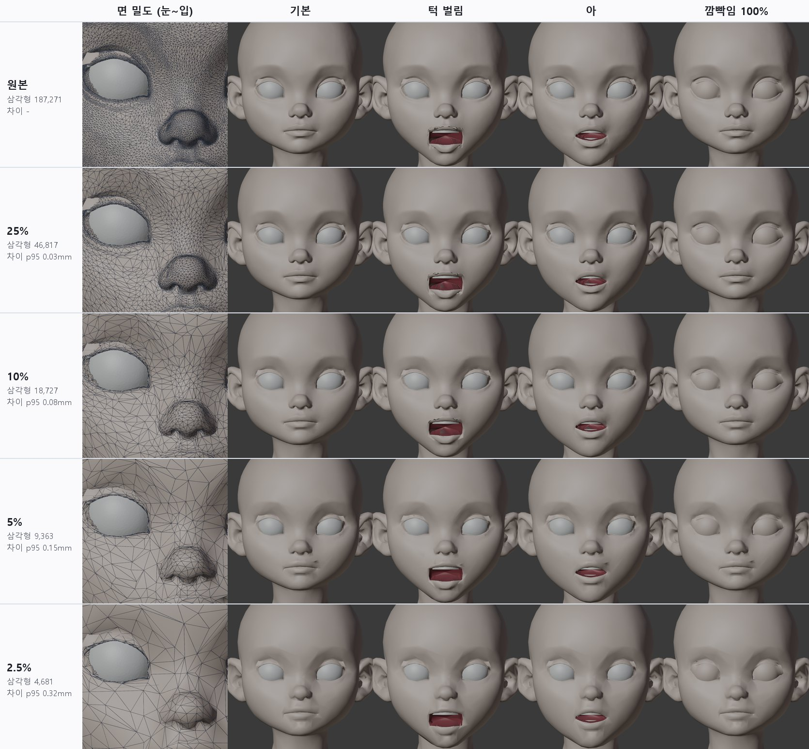
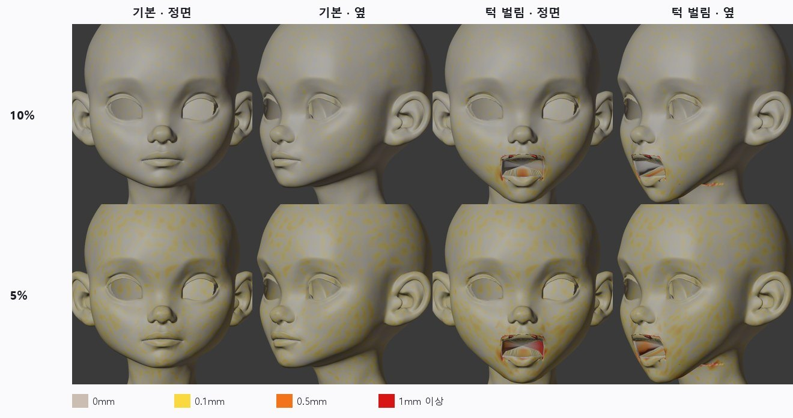
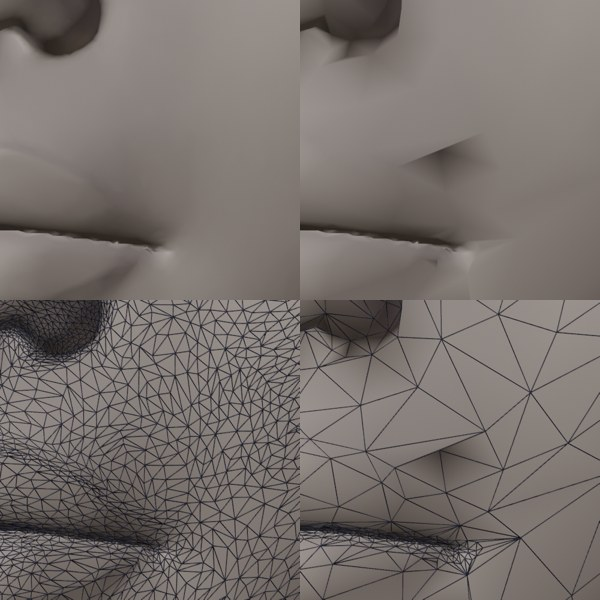
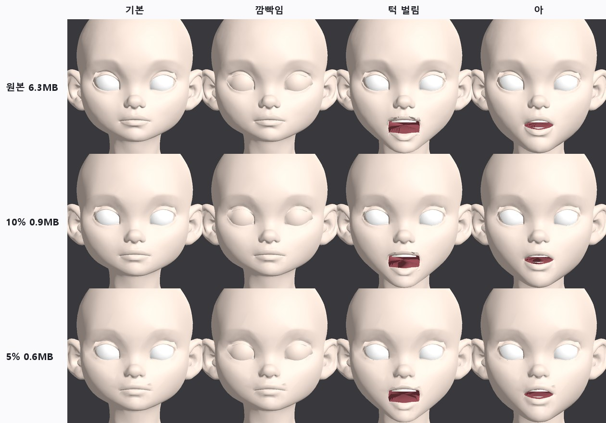

<title>T6 면 수 줄이기</title>
<link rel="preconnect" href="https://fonts.googleapis.com">
<link rel="preconnect" href="https://fonts.gstatic.com" crossorigin>
<link rel="stylesheet" href="https://fonts.googleapis.com/css2?family=IBM+Plex+Mono:wght@400;500&family=IBM+Plex+Sans+KR:wght@400;500;600;700&display=swap">
<style>
/* Layout: one reading column; figures full width of the column */
:root{--bg:#F5F6F8;--paper:#fff;--ink:#1B1F27;--muted:#5B6473;--line:#DDE1E8;--soft:#EEF1F6;--accent:#2F5BD3;--good:#1E8A52;--bad:#C83A32;--warn:#B26A00;
--f-body:"IBM Plex Sans KR","Malgun Gothic",system-ui,sans-serif;--f-mono:"IBM Plex Mono",ui-monospace,Consolas,monospace}
@media (prefers-color-scheme: dark){:root:not([data-theme="light"]){--bg:#12151B;--paper:#191D25;--ink:#E5E8EE;--muted:#9BA4B3;--line:#2B313C;--soft:#20252F;--accent:#7FA2FF;--good:#5ACB8C;--bad:#FF6F66;--warn:#F0AE48;color-scheme:dark}}
:root[data-theme="dark"]{--bg:#12151B;--paper:#191D25;--ink:#E5E8EE;--muted:#9BA4B3;--line:#2B313C;--soft:#20252F;--accent:#7FA2FF;--good:#5ACB8C;--bad:#FF6F66;--warn:#F0AE48;color-scheme:dark}
*{box-sizing:border-box}
body{background:var(--bg);color:var(--ink);font-family:var(--f-body);font-size:16px;line-height:1.7}
main{max-width:920px;margin:0 auto;padding-inline:16px;padding-block:26px 60px}
h1{font-size:clamp(25px,4vw,33px);margin:0;line-height:1.25;text-wrap:balance}
.sub{color:var(--muted);margin:6px 0 0}
h2{font-size:21px;margin:38px 0 6px;text-wrap:balance}
h3{font-size:17px;margin:20px 0 4px}
p,ul,ol{max-width:72ch} li{margin:3px 0}
figure{margin:16px 0;background:var(--paper);border:1px solid var(--line);border-radius:12px;padding:12px}
figure img{display:block;width:100%;height:auto;border-radius:6px;background:#2a2a2e}
figure svg{display:block;width:100%;height:auto}
figcaption{font-size:14px;color:var(--muted);margin-top:8px}
figcaption b{color:var(--ink)}
.tbl{overflow-x:auto;margin:12px 0}
table{border-collapse:collapse;font-size:14.5px;min-width:540px;width:100%;background:var(--paper)}
th,td{border:1px solid var(--line);padding:6px 10px;text-align:left;vertical-align:top}
th{background:var(--soft)}
td.num{font-family:var(--f-mono);font-variant-numeric:tabular-nums;white-space:nowrap}
.good{color:var(--good);font-weight:600}.bad{color:var(--bad);font-weight:600}.warn{color:var(--warn);font-weight:600}
.box{background:var(--paper);border:1px solid var(--line);border-left:4px solid var(--accent);border-radius:0 10px 10px 0;padding:12px 16px;margin:14px 0}
code{font-family:var(--f-mono);font-size:13.5px;background:var(--soft);padding:1px 5px;border-radius:4px;overflow-wrap:anywhere}
svg text{font-family:var(--f-body)}
.s-ink{fill:var(--ink)}.s-muted{fill:var(--muted)}.s-paper{fill:var(--paper)}.s-soft{fill:var(--soft)}.s-acc{fill:var(--accent)}.s-good{fill:var(--good)}.s-bad{fill:var(--bad)}
.st-acc{stroke:var(--accent)}.st-good{stroke:var(--good)}.st-ink{stroke:var(--ink)}.st-muted{stroke:var(--muted)}.st-bad{stroke:var(--bad)}
</style>
<main>
<h1>T6 · 게임용 면 수 줄이기 (대칭 검증 포함)</h1>
<p class="sub">2026-10-12 · character1 v3 리그 완성본 · 25 / 10 / 5 / 2.5 % · Blender 4.5 무인 실행 + Godot 4.7 확인</p>
<div class="box"><b>결론</b>: <b>10%(삼각형 18,727개, glb 0.9MB)를 게임 기본 단계로 권장</b>합니다. 원본과의 모양 차이는 95%가 0.08mm 이내이고, 턱·입모양 키를 켠 상태도 같습니다. 눈 구멍과 입술 가장자리는 1개 점도 움직이지 않았습니다(눈꺼풀·입 안 부품이 그대로 맞음). 대칭은 원본보다 나빠지지 않았습니다. 5%는 입꼬리 위에 작은 접힘이 생겨 먼 거리용으로만 씁니다.</div>

<h2>1. 순서</h2>
<figure>
<svg viewBox="0 0 860 170" role="img" aria-label="T6 순서">
  <g font-size="12.5">
    <rect x="6" y="28" width="150" height="86" rx="8" class="s-paper st-acc" stroke-width="1.5"/><text x="81" y="54" text-anchor="middle" class="s-ink" font-weight="600">① 리그 완성본</text><text x="81" y="74" text-anchor="middle" class="s-muted">얼굴 9만 4천 점</text><text x="81" y="92" text-anchor="middle" class="s-muted">표정 키 6개</text>
    <rect x="176" y="28" width="150" height="86" rx="8" class="s-paper st-acc" stroke-width="1.5"/><text x="251" y="54" text-anchor="middle" class="s-ink" font-weight="600">② 경계선 잠금</text><text x="251" y="74" text-anchor="middle" class="s-muted">눈 구멍·입술 가장자리</text><text x="251" y="92" text-anchor="middle" class="s-muted">점에 가중치 1</text>
    <rect x="346" y="28" width="150" height="86" rx="8" class="s-paper st-acc" stroke-width="1.5"/><text x="421" y="54" text-anchor="middle" class="s-ink" font-weight="600">③ 편집 모드 축소</text><text x="421" y="74" text-anchor="middle" class="s-muted">모서리 합치기</text><text x="421" y="92" text-anchor="middle" class="s-muted">표정 키가 함께 따라옴</text>
    <rect x="516" y="28" width="150" height="86" rx="8" class="s-paper st-acc" stroke-width="1.5"/><text x="591" y="54" text-anchor="middle" class="s-ink" font-weight="600">④ 자동 검사</text><text x="591" y="74" text-anchor="middle" class="s-muted">모양 차이·대칭</text><text x="591" y="92" text-anchor="middle" class="s-muted">경계·접힘</text>
    <rect x="686" y="28" width="168" height="86" rx="8" class="s-paper st-good" stroke-width="2"/><text x="770" y="54" text-anchor="middle" class="s-ink" font-weight="600">⑤ glb → Godot</text><text x="770" y="74" text-anchor="middle" class="s-muted">T3과 같은 방식으로</text><text x="770" y="92" text-anchor="middle" class="s-muted">불러와 캡처</text>
    <path d="M156 71 H172 M326 71 H342 M496 71 H512 M666 71 H682" class="st-muted" stroke-width="2"/>
    <text x="6" y="146" class="s-muted">점을 옮겨 모양을 바꾸는 단계는 없습니다. 모서리를 합칠 때 새 점은 원래 표면 위의 가장 오차가 작은 자리에 놓입니다.</text>
  </g>
</svg>
<figcaption><b>그림 1.</b> 처리 순서. 비율 하나당 약 1분, 네 단계를 한 번에 실행합니다.</figcaption>
</figure>

<h3>표정 키를 다시 옮기지 않아도 되는 이유</h3>
<p>Blender 편집 모드에서는 표정 키(셰이프키)가 점마다 붙은 데이터로 함께 들어 있습니다. 모서리 두 점을 하나로 합치면 그 데이터도 두 점 사이 값으로 섞입니다. 그래서 줄인 뒤에도 턱 벌림·입모양 키가 그대로 남고, 따로 옮기는 단계(오차가 생기는 곳)가 없습니다. 아래 표에서 키를 켠 상태의 차이가 기본 상태와 같은 것이 그 확인입니다.</p>

<h3>경계선을 잠그는 이유</h3>
<p>눈꺼풀 부품(T1)은 눈 구멍 테두리 바로 뒤에 숨어 있고, 입 안(T2)은 입술 가장자리에 붙어 있습니다. 이 선이 움직이면 틈이 보입니다. 그래서 경계선 위의 점만 가중치 1로 잠그고, 나머지는 자유롭게 줄입니다. 처음에는 경계 주변 12mm를 넓게 보호했는데, 그러면 경계 주변만 촘촘하고 머리 뒤가 너무 거칠어져서(2.5%에서 차이 p95 2.3mm) 선 위의 점만 잠그는 방식으로 바꿨습니다.</p>

<h2>2. 결과</h2>
<figure><figcaption><b>그림 2.</b> 왼쪽 열은 오른쪽 눈~입꼬리 부분의 면 밀도입니다. 10%까지는 기본·턱 벌림·아·깜빡임이 원본과 거의 같습니다. 5%부터 입꼬리 위에 작은 그늘(접힘)이 보이고, 2.5%는 입술 윤곽이 흐려집니다.</figcaption></figure>
<div class="tbl"><table>
<tr><th>단계</th><th>삼각형</th><th>glb</th><th>모양 차이 p95<br>(기본 / 턱 / 아)</th><th>거울 차이 p95</th><th>경계선 이동</th><th>판정</th></tr>
<tr><td>원본</td><td class="num">187,271</td><td class="num">6.3MB</td><td class="num">-</td><td class="num">1.07mm</td><td class="num">-</td><td>-</td></tr>
<tr><td>25%</td><td class="num">46,817</td><td class="num">1.6MB</td><td class="num">0.03 / 0.03 / 0.03mm</td><td class="num">1.02mm</td><td class="num">0</td><td class="good">원본과 구별 불가</td></tr>
<tr><td><b>10%</b></td><td class="num">18,727</td><td class="num">0.9MB</td><td class="num">0.08 / 0.08 / 0.08mm</td><td class="num">0.94mm</td><td class="num">0</td><td class="good">게임 기본 단계</td></tr>
<tr><td>5%</td><td class="num">9,363</td><td class="num">0.6MB</td><td class="num">0.15 / 0.16 / 0.16mm</td><td class="num">0.86mm</td><td class="num">0</td><td class="warn">입꼬리 접힘, 중간 거리용</td></tr>
<tr><td>2.5%</td><td class="num">4,681</td><td class="num">0.5MB</td><td class="num">0.32 / 0.33 / 0.32mm</td><td class="num">0.77mm</td><td class="num">0</td><td class="warn">입술 윤곽 흐림, 먼 거리용</td></tr>
</table></div>
<p>모양 차이는 줄인 면 위 점에서 원본 표면까지의 거리, 그리고 원본 점에서 줄인 면까지의 거리 두 방향으로 쟀습니다. 표에는 앞 방향만 적었고, 뒤 방향도 같은 수준입니다(10%: 0.07mm). 입모양 이·우·에·오도 각각 같은 수준입니다(<code>qa_lod.json</code>).</p>

<h2>3. 차이가 어디에 생기나</h2>
<figure><figcaption><b>그림 3.</b> 원본 표면을 줄인 면까지의 거리로 칠했습니다. 기본 상태는 10%에서 0.1mm를 넘는 곳이 0.6%뿐입니다. 턱 벌림에서 빨간 곳은 두 군데입니다. (1) 입 안 주머니: 원래 거칠고 밖에서 보이지 않는 면입니다. (2) 턱 아래 목의 가는 선: 원본 턱 키가 이미 이곳을 구기고 있습니다(원본 삼각형 319개가 뒤집힘, T2의 "목 혹" 문제). 줄인 면이 그 구김을 따라가지 못해서 생긴 차이이고, 줄이기 때문에 생긴 문제가 아닙니다.</figcaption></figure>

<h2>4. 대칭 검증</h2>
<ul>
  <li><b>모양 대칭</b>: 얼굴 앞쪽 점을 좌우로 뒤집어 같은 표면까지 거리를 쟀습니다. 원본 p95 1.07mm, 줄인 단계 0.77~1.02mm입니다. <span class="good">줄이면서 비대칭이 늘지 않았습니다.</span> 2.5%가 오히려 작은 것은 잔주름이 사라져서입니다.</li>
  <li><b>점 짝 대칭</b>: Blender 축소의 "대칭" 옵션은 좌우 짝이 되는 점이 있을 때만 작동합니다. Tripo 원본은 짝인 점이 거의 없어서(0.1~0.6%) 옵션을 켜도 끈 것과 결과가 똑같았습니다. 확인을 위해 두 번 실행해 비교했습니다.</li>
  <li><b>완전 대칭이 꼭 필요하면</b>: 왼쪽 반을 줄이고 오른쪽에 뒤집어 붙이면 점 짝까지 대칭이 됩니다. 다만 오른쪽 모양이 원본 비대칭만큼(p95 약 1mm) 바뀝니다. "원본 모양 유지" 원칙 때문에 기본으로는 하지 않았습니다. 필요하면 옵션으로 넣겠습니다.</li>
</ul>

<h2>5. 5%의 입꼬리 접힘</h2>
<figure><figcaption><b>그림 4.</b> 왼쪽 원본, 오른쪽 5%. 위는 음영, 아래는 면. 입꼬리 위에 큰 삼각형이 생기고 그중 하나가 아래를 향해 접혀(법선이 아래쪽) 그늘이 집니다.</figcaption></figure>
<p>자동 검사가 이런 접힘을 찾습니다. 접힘은 원본 표면과 60도 넘게 어긋난 면, 또는 원본에서는 뒤집히지 않는데 표정 키에서 뒤집히는 면입니다. 고치는 방법도 두 가지 시험했습니다.</p>
<div class="tbl"><table>
<tr><th>시도</th><th>결과</th></tr>
<tr><td>접힘 주변 3mm 원본 점을 잠그고 다시 줄이기 (4회 반복)</td><td class="warn">접힘 49 → 17개. 입꼬리 그늘은 사라졌지만 윗입술 가운데에 작은 주름이 새로 생기고 차이 p95가 0.14 → 0.23mm로 커짐. 기본값은 끔(옵션으로 남김)</td></tr>
<tr><td>움직이는 부위(입·눈 주변) 전체에 약한 보호 가중치</td><td class="bad">머리 뒤가 너무 거칠어져 차이 p95 2~3mm. 버림</td></tr>
</table></div>
<p>결론적으로 5% 이하에서는 입술처럼 부드러운 윤곽을 지키는 다른 줄이기 방식이 필요합니다(아래 남은 일). 10%는 이 문제가 없습니다.</p>

<h2>6. Godot에서 확인</h2>
<figure><figcaption><b>그림 5.</b> T3와 같은 Godot 시험 장면에 줄인 glb를 넣었습니다. 메쉬 7개, 표정 키 6개, 눈꺼풀 뼈 18개 모두 그대로 불러와집니다. 10%는 원본과 구별하기 어렵고, 5%는 입꼬리 그늘과 면 각짐이 보입니다.</figcaption></figure>

<h2>7. 권장 구성</h2>
<div class="tbl"><table>
<tr><th>게임 단계</th><th>쓸 비율</th><th>쓰는 곳</th></tr>
<tr><td>LOD0</td><td>10% (18.7k 삼각형)</td><td>대화·클로즈업·플레이어 캐릭터</td></tr>
<tr><td>LOD1</td><td>5% (9.4k)</td><td>화면 높이의 1/4 이하로 보일 때</td></tr>
<tr><td>LOD2</td><td>2.5% (4.7k)</td><td>먼 거리, 군중</td></tr>
</table></div>

<h2>8. 남은 일</h2>
<ul>
  <li>5% 이하 입술 윤곽 지키기: 곡률이 큰 선(입술 윤곽, 쌍꺼풀 선)에 비용을 더 주는 줄이기를 직접 구현하거나, 깨끗한 사각면으로 다시 덮는 방식(QuadriFlow 등)과 비교. 다시 덮는 방식은 모양이 조금 바뀌므로 차이 측정을 함께 합니다.</li>
  <li>텍스처: 줄일 때 UV도 함께 섞이므로 원본 텍스처를 그대로 쓸 수 있을 것으로 보입니다. 아직 텍스처를 입혀 확인하지는 않았습니다.</li>
  <li>턱 키의 목 구김(T2 문제)을 고치면 턱 벌림 차이 지도의 빨간 선도 함께 사라집니다.</li>
</ul>

<h2>9. 파일</h2>
<ul>
  <li><code>tools/face_auto/lod_decimate.py</code>: 경계 잠금, 편집 모드 축소, 모양 차이·대칭·경계·접힘 검사, 선택적 접힘 보수(<code>LOD_REPAIR</code>)</li>
  <li><code>tools/face_auto/render_lod.py</code>: 단계별 면 밀도·기본·턱·아·깜빡임 그림</li>
  <li>결과물(임시 폴더): <code>t6/lod/lod_25|10|5|2.5.blend</code>, <code>qa_lod.json</code>, Godot 시험 <code>t6/godot_10</code>, <code>t6/godot_5</code></li>
</ul>
</main>
